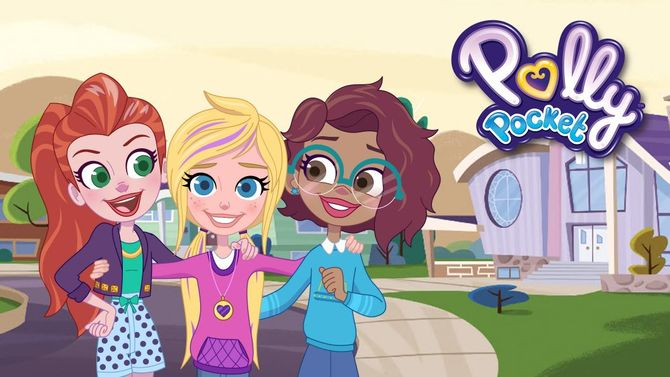

Bienvenidos al micrositio de Lila Draper
¡Hola! Mi nombre es Catherina y soy estudiante de la Licenciatura en Diseño Gráfico y Comunicación Visual.
Tanto el sitio web de Lila Draper, como este micrositio, son mi trabajo de 1º Parcial para la materia de Diseño Multimedia I.
En esta página te acompañaremos en un recorrido por lo que fue el proceso de la creación del sitio web llamado Lila Draper, de la serie infantil Polly Pocket, producida por Discovery Kids
